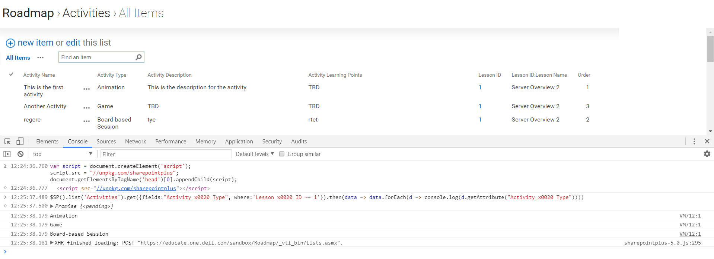

SharepointPlus ($SP) is a JavaScript API for Sharepoint. This library offers some extended features for SharePoint entirely on client side (requires no server install). $SP will simplify your interactions with Sharepoint.
SharepointPlus 6.0
Important changes introduced with SharepointPlus v6.0. Make sure to read the announcement and to read the changelog.
Description
Sharepoint Support
Sharepoint 2007 : SharepointPlus v3.0.5 is the last release that I have tested with Sharepoint 2007 -- after this version I cannot assure the retro-compatibility
Sharepoint 2010 : Compatible since SharepointPlus v3.0.5 -- SP2010 is not tested anymore with last versions but it should work OK
Sharepoint 2013/2016/2019/Online : Compatible since SharepointPlus v3.13 -- ✓ fully tested, 100% compatible!
Installation
Node environment
If you develop with Node, you can install the module with:
npm install sharepointplus
Then, just import it:
import $SP from 'sharepointplus'
To make $SP available from the browser's web console, you can add:
global.$SP=$SP;
Tree Shaking
Because SharepointPlus is split in small modules, you can only import the pieces you need, reducing the size of your bundles. To do so, you have two options.
1) Without Webpack
If you don't use Webpack, then you need to manually import the different modules based on your needs.
// By using the below line, you'll import all the 70+ functions in your bundle
// import $SP from 'sharepointplus'
// By replacing the above line with only the necessary functions, you'll cut down the bundle size:
// let's suppose you only need $SP().list().get() and $SP().getPeopleLookup() in your file
import spInit from 'sharepointplus/es5/init.js'
import list from 'sharepointplus/es5/lists/list.js'
import get from 'sharepointplus/es5/lists/get.js'
import getPeopleLookup from 'sharepointplus/es5/utils/getPeopleLookup.js'
const $SP = spInit({'list':list, 'get':get, 'getPeopleLookup':getPeopleLookup });
Find the path to each function into this file.
2) With Webpack / SPFx project
If you use Webpack for your application, you can leverage the sharepointplus-loader plugin that will automatically replace import $SP from 'sharepointplus' in your code with the functions used in the file.
// ----- file 'component.js' BEFORE being compiled with Webpack import $SP from 'sharepointplus'
// ----- file 'component.js' AFTER being compiled with Webpack using the `sharepointplus-loader` plugin
// let's suppose you only use $SP().list().get() and $SP().getPeopleLookup() in the file
// then the `sharepointplus-loader` plugin will automatically convert `import $SP from 'sharepointplus'` to the below code:
import spInit from 'sharepointplus/es5/init.js'
import list from 'sharepointplus/es5/lists/list.js'
import get from 'sharepointplus/es5/lists/get.js'
import getPeopleLookup from 'sharepointplus/es5/utils/getPeopleLookup.js'
const $SP = spInit({'list':list, 'get':get, 'getPeopleLookup':getPeopleLookup });
To use sharepointplus-loader plugin, add it to your Webpack configuration file, in the plugins section.
For regular Webpack config:
// ----- file 'webpack.conf.js'
const webpack = require('webpack');
const SharepointPlusLoaderPlugin = require('sharepointplus-loader/plugin'); // load the plugin
module.exports = {
[ ... your configuration ... ],
plugins:[
new SharepointPlusLoaderPlugin() // add the plugin here
]
};
Or if you work with SPFx you have to edit your gulpfile.js file:
// ----- file 'gulpfile.js'
const gulp = require('gulp');
const build = require('@microsoft/sp-build-web');
[ ... your configuration ... ]
// add the plugin with the below block of code:
const webpack = require('webpack');
const SharepointPlusLoaderPlugin = require('sharepointplus-loader/plugin'); // load the plugin
build.configureWebpack.mergeConfig({
additionalConfiguration: (generatedConfig) => {
if (!Array.isArray(generatedConfig.plugins)) generatedConfig.plugins=[];
generatedConfig.plugins.push(new SharepointPlusLoaderPlugin()); // add the plugin here
// return modified config => SPFx build pipeline
return generatedConfig;
}
});
build.initialize(gulp);
Browser only
You can also just drop one file in your HTML document which will contain all the 70+ functions and all the polyfills to support the different browsers:
<script type="text/javascript" src="https://cdn.jsdelivr.net/npm/sharepointplus/browser/sharepointplus.js"></script>
Because this file contains all the functions as well as all the polyfills, it might be quite big (~62KB gzipped).
Browser Support
IE11, and all modern browsers (Firefox, Chrome, Edge, ...) (see coverage) are supported with the bundle for browsers.
How it works
SharepointPlus uses the different Sharepoint Web Services to deal with the Sharepoint server.
Below is a comparative between Web Services (used by SharepointPlus) and REST API (used by some other libraries):
| Web Services (XML) | REST API (JSON) |
|---|---|
| ✓ Large compatibility (since Sharepoint 2007) | ✗ Partial support (since Sharepoint 2013 only) |
| ✓ Consistent availability of features across versions | ✗ New features only applied to Sharepoint Online |
| ✓ Large coverage of features | ✗ More restreint features |
| ✓ Simple authentication | ✗ Authentication with a token |
| ✓ Native XML, but JSON supported by SharepointPlus | ✓ Native JSON support |
| ✗ Bigger amount of bytes returned | ✓ Less amount of bytes returned |
Because of the large compatibility and of the available features, using the Web Services it's still the right call for SharepointPlus.
Examples
Let's see some examples of what you can do with SharepointPlus:
// Update all items with an "Amount" value bigger than 1000
$SP().list('My List Name').update({
Title:"Too expensive"
}, {
where:"Amount > 1000"
}).then(function(res) {
alert(res.passed.length+" items successfully updated!");
});
// Get all items with "Requestor" as the current user and with "Default Color" is "pink"
// Ordered by Size from bigger to smaller
$SP().list('ListName').get({
fields:"Title,Size",
where:"Requestor = '[Me]' AND Default_x0020_Color = 'pink'",
orderby:"Size DESC"
}).then(function(data) {
var html = "<ul>";
for (var i=data.length; i--;)
html += "<li>Model '"+data[i].getAttribute("Title")+"' (size: "+data[i].getAttribute("Default_x0020_Color")+")<li>";
$('#list').append(html+'</ul>');
});
// when you have to deal with a date from a .get() you can use `$SP().toDate()`...
$SP().list('My Calendar List').get({
fields:"Meeting_x0020_Date"
})
.then(function(data) {
for (var i=data.length; i--;) console.log($SP().toDate(data[i].getAttribute("Meeting_x0020_Date")).getFullYear());
});
// ... or `$SP().toSPDate()` to send it back to Sharepoint
var nextMeeting = new Date("5/May/2015");
$SP().list('ListName').add({Title:"Next Meeting",Meeting_x0020_Date:$SP().toSPDate(nextMeeting)});
// You can parse an extended person field coming from a list
// e.g. get the authors' emails of items created during the last 10 days
// Note: here we use `json:true` to get a JSON
$SP().list("My List").get({
fields:"Author", // we need the "Author" column
where:"Created > [Today-10]", // all items created during the last 10 days
expandUserField:true, // we want to get all details for the user, like their id, name, username, email
json:true // we want the result to be returned as a JSON
})
.then(function(data) {
data.forEach(function(d) {
console.log($SP().getPeopleLookup(d.Author).email);
})
})
// Create a file with "Hello World" as a content, and put it in a folder called "Demo"
$SP().list("Documents").createFile({
content:"Hello World",
filename:"Demo/HelloWorld.txt"
})
.then(function(file) {
console.log(file.Url+" has been created")
})
Each function is documented with examples.
Try it out
You can test it right now. Just open your browser "Developer Tools" window on your SharePoint site somewhere, then run the following code snippet which will load the SharepointPlus script dynamically:
// 1: Load SharepointPlus
var script = document.createElement('script');
script.src = "//cdn.jsdelivr.net/npm/sharepointplus/browser/sharepointplus.js";
document.getElementsByTagName('head')[0].appendChild(script);
// if you receive the error: "Refused to load the script 'https://cdn.jsdelivr.net/npm/sharepointplus/browser/sharepointplus.js' because it violates the following Content Security Policy directive" then you'll have to directly copy/paste the code from https://cdn.jsdelivr.net/npm/sharepointplus/browser/sharepointplus.js in the console
// 2: Try some library methods
$SP().list('List In the Current Site').get({fields:"ID", where:"ID > 0"}).then(function(data) { data.forEach(function(d) { console.log(d.getAttribute("ID")) }) });
$SP().whoami().then(function(people) { for (var i=0; i < people.length; i++) console.log(people[i]+" = "+people[people[i]]) })
Example:

Node Server Side Application
If you plan to run SharepointPlus on the server side using Node, you will need to provide your Sharepoint credentials (see this wiki to find the different authentication systems).
// the credentials depend of your authentication system
// see: https://github.com/s-KaiNet/node-sp-auth
const credentials = {
username:'my_username',
password:'mypassword',
domain:'mydomain'
};
// you can also define a proxy
const proxyweb = "http://" + credentials.domain + "%5C" + credentials.username + ":" + credentials.password + "@proxy:80";
const $SP = require('sharepointplus');
const sp = $SP().proxy(proxyweb).auth(credentials);
// you can then use SharepointPlus normally
// e.g.: sp.list("Hello", "http://my.sharepoint.site/").get(...);
Older Versions
The previous versions of SharepointPlus are available in the releases folder
The documentation for SharepointPlus v4.0 is available at https://sharepointplus4.netlify.com/
The documentation for SharepointPlus v5.2 is available at https://sharepointplus5.netlify.com/docs/